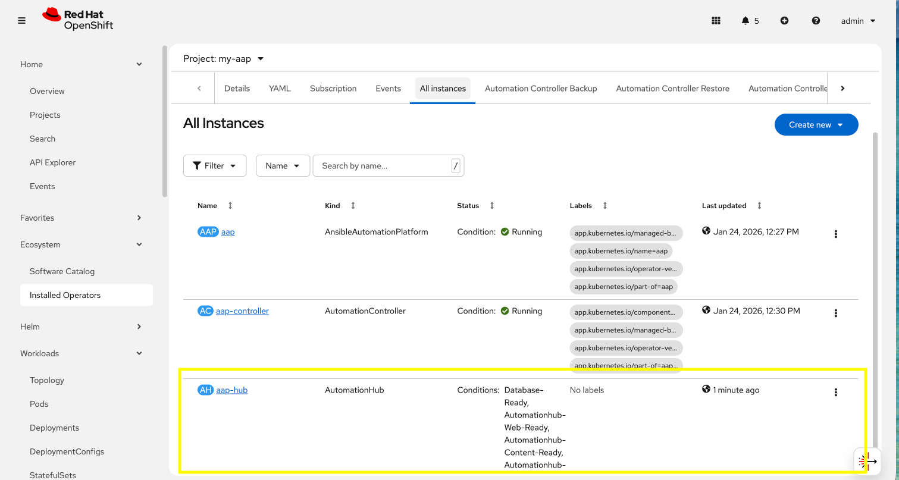

Modify the existing deployment
The operator will manage the desired state of the created custom resources.
For instance, if changes are manually made to operator managed resources, like Deployments, ConfigMaps, etc, then the operator may override those changes and reapply the desired state according the the deployed AnsibleAutomationPlatform, AutomationController, etc .
Likewise, if updates are made to already deployed AnsibleAutomationPlatform, AutomationController, etc, than the operator will reconcile already deployed instances and apply the desired configuration automatically.
Let’s demonstrate this assertion by modifying the already created AnsibleAutomationPlatform custom resource to also deploy an instance of Automation Hub and observe how the AAP deployment gets updated.
-
Navigate to Ecosystem on the left hand navigation → Installed Operators.
-
Next to the
Project:dropdown in the top left, ensuremy-aapis the project shown. -
Click on the
Ansible Automation Platformoperator. -
In the toolbar click on All instances.
-
Click on the aap named resource.
-
Click on the YAML toolbar button.
-
In the code entry field, update the
speckey to the following:Custom AAP Deployment# ... other configuration spec: admin_password_secret: my-aap-admin-secret image_pull_policy: IfNotPresent no_log: false redis_mode: standalone route_tls_termination_mechanism: Edge controller: disabled: false eda: disabled: true hub: disabled: false content: replicas: 1 file_storage_access_mode: ReadWriteMany file_storage_size: 100Gi file_storage_storage_class: ocs-external-storagecluster-cephfs gunicorn_api_workers: 1 gunicorn_content_workers: 1 worker: replicas: 1 lightspeed: disabled: true # ... other configuration
-
-
Click the Save button.
The only changes made from the originally deployed instance is the contents contained within the hub key. The status of the AnsibleAutomationPlatform custom resource will change to Status: Running while Automation Hub is deploying.
When the status of the AutomationHub custom resource named aap-hub shows Conditions: Database-Ready, Automationhub-API-Ready, Automationhub-Operator-Finished-Execution, Automationhub-Web-Ready, Automationhub-Content-Ready, Automationhub-Worker-Ready, Automationhub-Routes-Ready, the Automation Hub component of AAP should be successfully deployed.
| Automation Hub will take about 10 minutes to successfully deploy. |

Log into the AAP instance again and see that the Automation Hub component of AAP is now deployed.